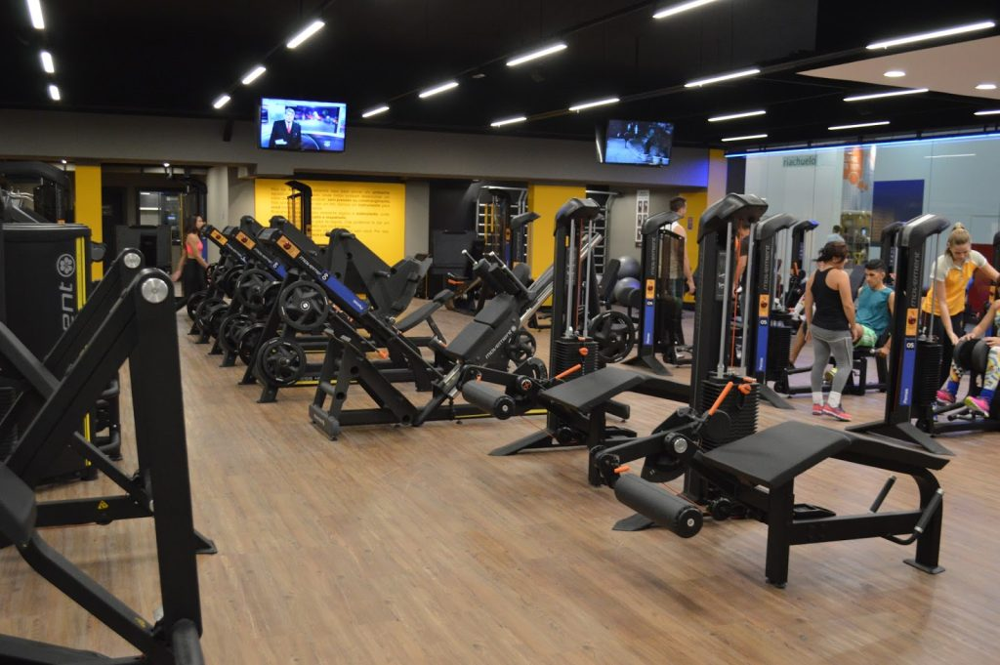

especializado do iniciante ao avançado
Fazer com que você sinta segurança e confiança para realizar seus treinos.Aqui você vai encontrar fichas de treinos especializadas, previamente geradas por IA, focadas em hipertrofia, ganho de força, planilhas de corrida e etc...

Para encontrar a academia de rede mais próxima de você:
Hipertrofia, treinos de força, corrida e etc...
| Exercícios | Séries | Repetições |
|---|---|---|
| Supino Reto com Barra | 4 | 12 |
| Supino Inclinado com Halteres | 3-4 | 12 |
| Cross-over polia alta | 3-4 | 12 |
| Paralela | 3-4 | 6-8 |
| Triceps na polia c/ corda | 3-4 | 12 |
| Triceps francês na polia | 3-4 | 12 |